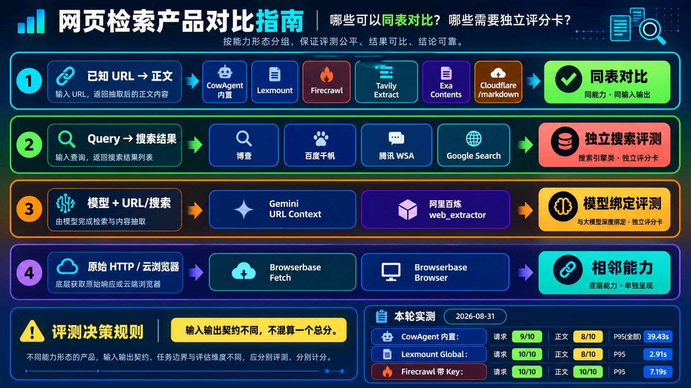

Formal evaluation report · web_fetch
Public Web Fetch Core Dataset
对 URL → 内容方法进行可复现比较。请求结果、失败响应、指标与环境信息均由本次运行 artifact 生成。
Attempts
30
完整保存的调用次数
Providers
3
本次实际运行的方法
Transport
96.7%
请求层成功率
Content pass
86.7%
正文锚点通过率
一图读懂能力边界与本轮结果
同一总分只比较相同输入输出契约；搜索、模型绑定和原始 HTTP/云浏览器能力分别建评测集。

提供方比较
Transport success 与 content pass 分开统计，避免 HTTP 200 掩盖空正文或错误页面。
| 方法 | Attempts | Transport | Content | P50 | P95 | Failures | Deadline overruns |
|---|---|---|---|---|---|---|---|
| cowagent-built-in cowagent_builtin | 10 | 90.0% | 80.0% | 1,872 ms | 2,871 ms | 2 | 0 |
| firecrawl firecrawl | 10 | 100.0% | 100.0% | 2,508 ms | 7,193 ms | 0 | 0 |
| lexmount-global lexmount | 10 | 100.0% | 80.0% | 1,470 ms | 2,913 ms | 2 | 0 |